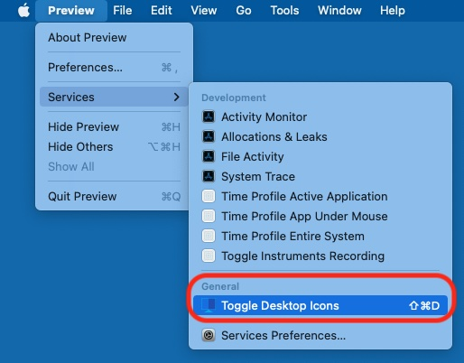
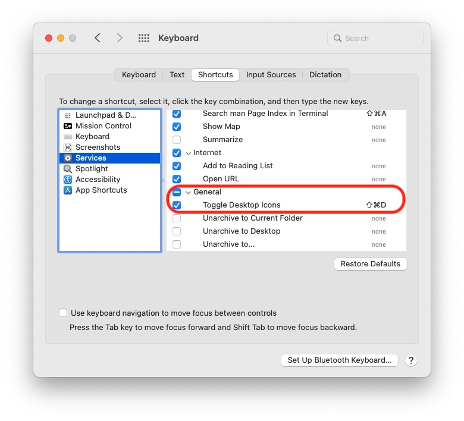

Welcome to Hide Icons

Hide Icons effectively hides your Desktop icons. Ideally it should be placed in the Applications folder. It can be specified as a Login Item in your user account as a nice way to have the application run automatically.
1) Use
Hide Icon is used two ways:
 
Notice the default key combination (this can be changed, see below).

 

Show Desktop icons/Hide Desktop Icons toggles showing or hiding the Desktop icons.
Refresh Desktop forces an update of all Desktops across all screens and Spaces. This option will also cause Hide Icons to forget which Desktop goes with which Space (see below).
If Right-click to show menu is enabled, then clicking on the the menu ( ) will toggle Show/Hide Desktop icons and right-click will open the menu. The default is the opposite behavior.
) will toggle Show/Hide Desktop icons and right-click will open the menu. The default is the opposite behavior.
If Check for changing Desktop is set to anything other than Never, Hide Icons will update the Desktop every time interval specified. This allows for changing Desktops.
Change menu allows you to hide the menu item (replaces it with a blank icon) or to completely remove the menu from the menu bar. For the latter case, one can still use Services to toggle showing/hiding icons. To get the menu back, simply re-run Hide Icons.
2) Services
Hide Icon can be controlled by Services. You may have to got to >System Preferences…>Keyboard, select Shortcuts, select Services on the left and check Toggle Desktop Icons on the right. You can also select your own shortcut.
 
If Toggle Desktop Icons is not present, make sure Hide Icons is in the Applications folder and you will need to logout/login for macOS to see the Service.
3) Where is the menu (
)?
Simply run Hide Icon again. The menu is not present if Hide Icon was started as a Service or >Change menu>Remove menu was chosen.
If command key (⌘) is held when Hide Icons starts, the user defined preferences are ignored and default preferences are used instead- useful if you chose an preference you don't like.
4) Requirements
Hide Icon was written in Swift with Xcode 12.4. It was compiled to support macOS 10.12 (Sierra) through 12.x (Monterey). Versions before 10.4 (High Sierra) can not detect Dark Mode switching.
5) Details
Hide Icon doesn’t touch the Desktop icons. It simply takes a picture of the Desktop (without the icons) and displays this picture just above the real Desktop giving the illusion that the icons have vanished. THEY HAVE NOT. If you open a Finder window, you can easily navigate to Desktop. From there you can add, remove and manipulate items on the Desktop. You must either Show Desktop Icons or quit Hide Icons to have the usual Desktop back.
If Check for changing Desktop is set to anything other than Never, then for every time interval specified the picture of the real Desktop is taken to allow for time varying Desktops. Similary, on macOS 10.14 and above, changes in Appearances (e.g. Dark Mode) are immediately reflected.
If you are using multiple Spaces (with any number of screens), Hide Icons doesn't actually know which Desktop goes with which Space. However, once you visit that space, Hide Icons will remember that Desktop goes with that Space. Until it does, switching Spaces may temporarily display the wrong Desktop. Selecting Refresh Desktop will force Hide Icons to forget these correlations.
6) Warning/Disclaimer/Licenses
Using this application won’t make you more attractive or get you rich. Regardless, Hide Icons will never affect your Desktop icons.
I wrote this for my personal use. I find it useful. I know others have also found it useful too. It’s free and you an give the distribution (i.e. as you got it) to anyone you want. You can’t sell it, though. And if you modify the script and don’t give me credit for the original, you’re simply evil (and are violating this license).
G.J. Parker- http://www.parker9.com (Entonos)